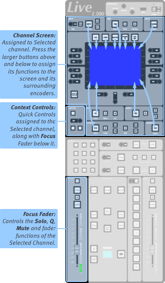
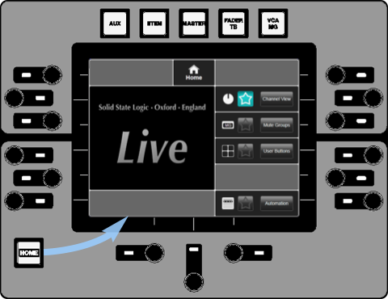

Control Tile

The Control Tile consists of a small touchscreen and controls around it. It is not fitted to L100, L200 or L450 consoles.
The Focus Fader (on the Master Tile) and Context controls with the Control Tile form the Focused path. The Focus Fader and Context controls simply follow path selection and Quick Controls functions respectively.
The Control Tile touchscreen provides an alternative to the main screen for adjusting path parameters.
Press the large function buttons (EQ, Dynamics, Pan, etc.) to select that parameter to the screen.
Press & hold the function buttons to assign that section to the Quick Controls as well as the Control Tile screen.
Essential controls are provided by the smaller buttons around the function buttons.
The encoders around the screen control the displayed parameter adjacent to it. The screen may also be touched, swiped, or pinched to adjust parameters.
The Control Tile touchscreen and associated controls will follow the Selected path, unless the Focus Fader has been locked to a specific path and the Link Channel Control Tile option has been enabled, at which point it will display the locked Focus Fader path.
Home Button

Home accesses these functions:
- Channel View shows the parameters of the selected path (as described above).
- Mute groups shows mute group controls. These are in the following tutorial pages.
- User buttons show the ten user buttons.
- Automation shows the list of the scenes. See the Automation page for details.
The icon on the touchscreen allows that menu to be stored as a shortcut.
Press & hold the Home button to recall the stored menu.
Note: The brightness controls are used to control the brightness of the screens and switches. See Console and User Options for further details.